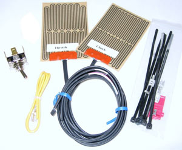

foreplay

Yes, this is a bit rambling, but I like to write. If you like to read, we're in
luck. If you don't like to read, well, there's some nice pictures..
I'm spoiled in having two bikes with heated grips. When I got my KTM 950 Adventure,
I knew it would not be long before I installed some grips. Regardless of what
people think about California, we have plenty of cool weather riding. I like
installing the Symtec heated grips, as you have more grip choices, easier grip
replacement, and a low cost.
buy some here
I always buy my Symtecs from California Sport Touring, because I can drive up
there to visit and the owner is a super nice guy. I went with the kit that
has a metal toggle, instead of the plastic round rocker, for two reasons.
Most important, I've had the round rocker on another bike, and they have a
life span of about 18 months in the best conditions. I had a long talk once
with the owner of Symtec, and he basically admitted that the round rocker wasn't
very durable, and was "being redesigned". Apart from that, I wasn't sure where
I was mounting my switch, but I was pretty sure I would find a location where
the metal toggle could work.
Ok... let's install them!
The Install
First things first, take off the windscreen and both the upper shrouds.
After doing this sort of thing on a VFR800, a BMW Dakar, and a Ducati ST3,
the KTM is actually easier to take apart.
Here are the ACC1 (unswitched) and ACC2 (switched) wires in the KTM harness.
This is the right side of the headlight shroud, they were tucked up just behind
the subframe. Brown is the ground wire.
Placing the elements and the wires is pretty self explanatory. The only photo
I took of that was blury. I used 1" heat shrink to insulate the clutch side bar,
placed the wires a 10 o'clock on the clutch side and 2 o'clock on the throttle
side. The directions say 9 o'clock and 3 o'clock, but I wanted to rotate the
meat of things to be a bit more on my palms.
In the end, the included switch didn't matter, because I found DPDT on-off-on
mini toggle switches on ebay.com for CHEAP. I have this setup on my ST3, it's
really sano and I think durable enough for dual sport use. Yeah, the switch is
tiny, but doesn't feel fragile. If I break it, I'll have to do some soldering
to replace it, but I'm willing to risk that.
I decided my install point should be the left side handlebar switch housing.
There's enough room internally to *barely* fit the wires. The switches I found
have really short terminal posts, which helps the wires clear the bar once
installed. This install requires drilling a small hole in the faceplate. I don't
remember the bit size, basically as small as possible but still fitting the switch.
In this photo you can also notice the shrink wrap on the clutch side bar.


Once that was drilled, I was fully committed, so it was time to wire up the switch.
I wanted to use 3 conductor, 22 gauge wire, bundled in black housing. However,
I also didn't want to order a 500ft roll, or wait 2 weeks for it arrive. I farted
about with some landscaping wire and various bundled data cables, then decided to
just braid some 22 gauge wire and be done with it. I had done the same with my
Ducati, using 3 black wires to keep it discrete. This time I opted for colored
wires. The color choice was based on wire I have on hand, but since the colors
don't make any sense on the Symtec kit, either, I didn't feel too bad.
Getting in between the posts to attach these was a bit tight, but it worked out
in the end. I decided to also clip off the 3 pins that were unused. The third
hand is invaluable for this sort of work.
Once that was done, I gently bent the soldered wires to the contour of the bar.
Here's a shot of the back of the switch, with wires routed out of the housing
with the rest of the switch gear's wiring.
At this point I left the switch alone and routed all the wires.
It was pretty easy to follow everything else down to the steering head, and out the
right side to where the ACC2 wires are. I decided to wire in to ACC2 (switched),
since I don't see much need in having them on when the bike is off. When I was
done routing, I sanity checked the continuity through the switch circuit. This
helped me remember which color I had wired to high (up) and low (down) on the
switch. It's not intuitive on the actual switch, when you set the toggle one
way, current flow in through the center and out through the opposite post.
Here's shot of everything once it's plugged in.
The blue from each element are paired (using the connector that came with the grips).
Same with the whites. Then blue pairs are joined to crimped male connector on the
switch's 'high' output wire. Same for the white pairs, connecting them to the
switch's 'low' output wire. The symtec ground pairs (red) are wired together
into a mail crimp connector and plugged into the ACC2 brown female. The input
wire to the switch gets a crimp male and connects to the ACC2 black/red female.
Time to fire it up and see if smoke comes out! For testing, I hooked the switch
input to ACC1 temporarily, so I wouldn't have to keep the key on while waiting
for the grips to warm up. After testing both high and low settings, put the switch
input wire back to ACC2 hot and you're good to go.
Speaking of opposite, the symtec directions are printed wrong; BLUE is HIGH,
WHITE is LOW. The diagram in the directions is labeled the opposite. If you
have any doubt, measure resistance through each color, the hot run will have more
resistance. I discovered the mixup while testing the final connections. It was
kind of funny, really. I meant to the grips for 5 min on low. Then, I forgot they
were on, and went upstairs for dinner. When I came back 45 minutes later, and had
completely forgotten I left the switch on. I casually rested my hand on what turned
out to be an extremely hot element, and scared the pants off myself.
Anyway, with things tested and high/low connected correctly, there was not much left
except to do except button things up. This is what the left switch housing looks like
when tightened down.
Here you can see the heating element is held temporarily in place with some e-tape.
I did that just to keep in in the right place while I sorted all the wire routing.
This is more important with the throttle side, as you want to leave a loop of wire
so the throttle can rotate back and not be restrained by the grip wiring.
The rest is dead easy. Pull the backing of the sticker side of the elements and
tack them down. Next, put some glue on your grips, and quickly slide them into
place. You might want to tape over the holes in the end of your bars where the
hand guard attaching bolts go, so you don't gum them up with glue. It's probably
best to leave the glue overnight before riding or running the grips. For glue I
used 3M Super77, but anything that can handle high temps should work.
frosting
As a bit of follow up, I found (also on ebay.com) some nice rubber covers that
thread onto the mini toggle.
Before installing these, I drilled a hole for the tab on the washer that keeps
the switch from rotating in the hole. I didn't drill this all the way through,
just a millimeter or so into the plastic.
Then I put on the cover. It looks pretty tight. Not quite factory, but damn tidy, I'd say.
That's it. I intend to write more blather about wiring up the heat controller
for my electric vest, but that's going to wait until I have some free time.
top